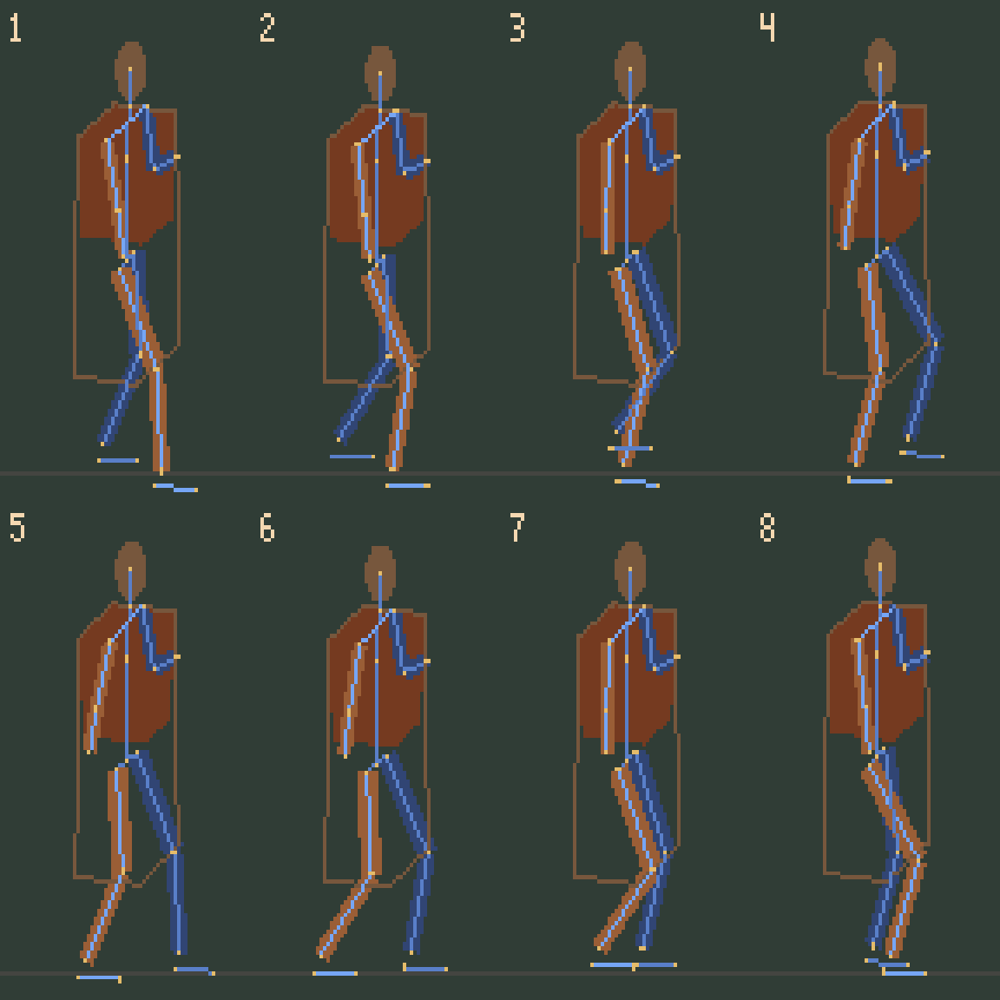
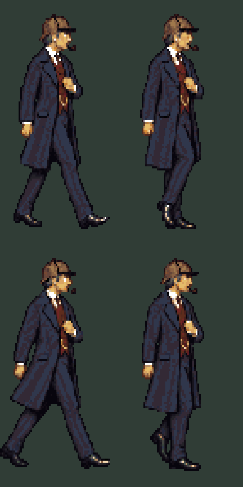

Unfinished — construction only. The connected body guide has fixed limb lengths and measured ground contacts. The generated drawings failed review and are not a view-200 delivery.
Loading…
Orange and blue identify the same two legs throughout. Crosses mark ground contacts. Movement is stepped with the pose here so the construction's planted foot can be inspected frame by frame. Final sprites still need their own contact measurements.

This trial repeats leg arrangements and has an excessive stride. It is preserved as a failed experiment, not the next approved animation.

Review and reproducible steps · Blender source · Construction checks